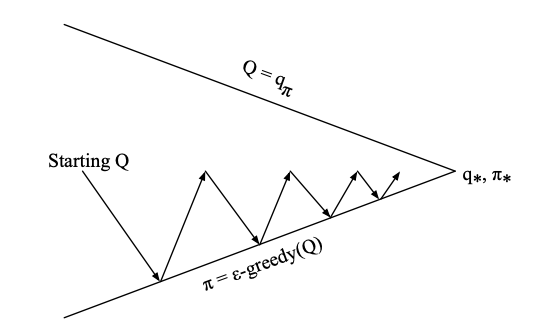
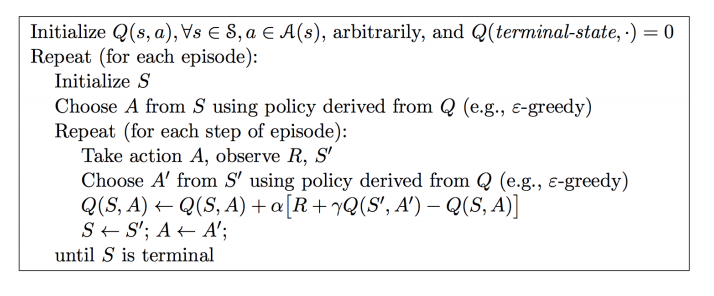
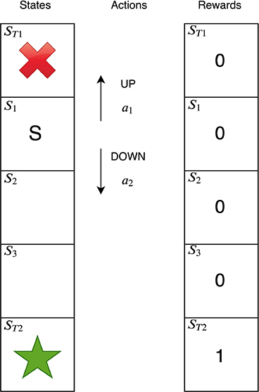
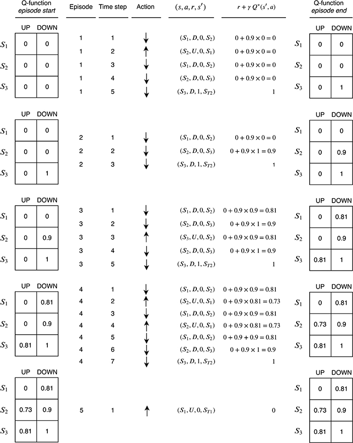

The SARSA Algorithm
Contents
The SARSA Algorithm¶
As we discussed in the [model-free control]() section, SARSA implements a \(Q(s,a)\) value-based GPI. SARSA is one of the best known RL algorithms and is very practical as compared to pure policy-based algorithms. It tends to be more sample efficient - a general trait of many value-based algorithms despite the algorithmic hybridization that is usually applicable today. Its name is attributed to the fact that we need to know the State-Action-Reward-State-Action before performing an update. The tree for SARSA is shown below:
 SARSA action-value backup update tree. The name SARSA is written as you read from the top to the bottom of the tree :)
SARSA action-value backup update tree. The name SARSA is written as you read from the top to the bottom of the tree :)
There are two concepts that we need to grasp:
The first is a technique for learning the Q-function via TD-learning that we have seen in [prediction]().
The second is a method for evolving the policy using the learned Q-function.
Using the tree and following the value estimate of [temporal difference (TD) learning](), we can write the value update equation as:
Effectively the equation above updates the Q function by \(\alpha\) times the direction of the TD-error. What SARSA does is basically the policy iteration diagram we have seen in the control above but with a twist. Instead of trying to evaluate the policy all the way using the DP, or over an episode using MC, SARSA does policy improvement over each time step significantly increasing the iteration rate - this is figuratively shown below:
 SARSA on-policy control
The idea is to increase the frequency of the so called \(\epsilon\)-Greedy policy improvement step where we select with probability \(\epsilon\) a random action instead of the action that maximizes the \(Q(s,a)\) function (greedy). We do so, in order to “hit” new states that we havent seen before (exploration).
The SARSA algorithm is summarized below:
 SARSA algorithm for on-policy control
\(Q(s,a)\) in practice is a table (matrix) stored in memory. Every step that we take an action we flip a “bent coin” and if “heads” comes up we take the maximum of the \(Q(s,a)\) values and this will be the policy improvement for the subsequent step. If it comes up as “tails” we just pick a random action and update the policy accordingly.
\(Q(s,a)\) estimation Example¶

Suppose an agent is learning to play the toy environment shown above. This is a essentially a corridor and the agent has to learn to navigate to the end of the corridor to the good terminal state \(s_{T2}\), denoted with a star.
There are five states in total. The agent always starts the game in state \(s_1\), denoted \(S\), and the game ends if the agent reaches either of the terminal states. \(s_{T2}\) is the goal state—the agent receives a reward of 1 if it reaches this state.
There are only two actions, \(a_{UP}\) and \(a_{DOWN}\).
The agent receives rewards of 0 in all other states.
The agent’s discount rate γ is 0.9.
The game is optimally solved by a policy which reaches \(s_{T2}\) in the smallest number of steps because an agent values rewards received sooner more than rewards received later in time. In this case, the smallest number of steps an agent can take to optimally solve the environment is 3.
How can we learn the optimal Q function?
The diagram is split into five blocks from top to bottom. Each block corresponds to a single episode of experiences in the environment; the first block corresponds to the first episode, the second block the second episode, and so on. Each block contains a number of columns. They are interpreted from left to right as follows:
Q-function episode start: The value of the Q-function at the start of the episode. At the beginning of episode 1, all of the values are initialized to 0 since we have no information yet about the function.
Episode: The episode number.
Time step: Each block contains a variable number of experiences. For example, there are three experiences in episode 2 and seven experiences in episode 4. The time index of each experience within the block is indicated by the time step.
Action: The action the agent took at each time step.
\((s, a, r, s′)\): The agent’s experience at each time step. This consists of the current state s, the action the agent took a, the reward received r, and the next state the environment transitioned into s′.
\(r + γQ*(s′, a)\): The target value (i.e., the right-hand side of the equation) to use in the Bellman update:
$\(Q*(s, a) = r + γQ*(s^\prime, a^\prime)\)$.
Q-function episode end: The value of Q-function at the end of the episode. The Bellman update has been applied for each experience of the episode in time step order. This means that the Bellman update was applied first for the experience corresponding to time step 1, then time step 2, and so on. The table shows the final result after all of the Bellman updates have been applied for the episode.
 TD Q-function learning
Obviously this is a trivial example to show in detail the calculations that are being done at every episode and time step. For a more elaborate gridworld, the python code that follows shows how SARSA would work in the environment below.
 SARSA Gridworld
SARSA Gridworld
# code is from https://github.com/rlcode/reinforcement-learning/tree/master/1-grid-world
import time
import numpy as np
import tkinter as tk
from PIL import ImageTk, Image
np.random.seed(1)
PhotoImage = ImageTk.PhotoImage
UNIT = 100 # pixels
HEIGHT = 5 # grid height
WIDTH = 5 # grid width
class Env(tk.Tk):
def __init__(self):
super(Env, self).__init__()
self.action_space = ['u', 'd', 'l', 'r']
self.n_actions = len(self.action_space)
self.title('SARSA')
self.geometry('{0}x{1}'.format(HEIGHT * UNIT, HEIGHT * UNIT))
self.shapes = self.load_images()
self.canvas = self._build_canvas()
self.texts = []
def _build_canvas(self):
canvas = tk.Canvas(self, bg='white',
height=HEIGHT * UNIT,
width=WIDTH * UNIT)
# create grids
for c in range(0, WIDTH * UNIT, UNIT): # 0~400 by 80
x0, y0, x1, y1 = c, 0, c, HEIGHT * UNIT
canvas.create_line(x0, y0, x1, y1)
for r in range(0, HEIGHT * UNIT, UNIT): # 0~400 by 80
x0, y0, x1, y1 = 0, r, HEIGHT * UNIT, r
canvas.create_line(x0, y0, x1, y1)
# add img to canvas
self.rectangle = canvas.create_image(50, 50, image=self.shapes[0])
self.triangle1 = canvas.create_image(250, 150, image=self.shapes[1])
self.triangle2 = canvas.create_image(150, 250, image=self.shapes[1])
self.circle = canvas.create_image(250, 250, image=self.shapes[2])
# pack all
canvas.pack()
return canvas
def load_images(self):
rectangle = PhotoImage(
Image.open("../img/rectangle.png").resize((65, 65)))
triangle = PhotoImage(
Image.open("../img/triangle.png").resize((65, 65)))
circle = PhotoImage(
Image.open("../img/circle.png").resize((65, 65)))
return rectangle, triangle, circle
def text_value(self, row, col, contents, action, font='Helvetica', size=10,
style='normal', anchor="nw"):
if action == 0:
origin_x, origin_y = 7, 42
elif action == 1:
origin_x, origin_y = 85, 42
elif action == 2:
origin_x, origin_y = 42, 5
else:
origin_x, origin_y = 42, 77
x, y = origin_y + (UNIT * col), origin_x + (UNIT * row)
font = (font, str(size), style)
text = self.canvas.create_text(x, y, fill="black", text=contents,
font=font, anchor=anchor)
return self.texts.append(text)
def print_value_all(self, q_table):
for i in self.texts:
self.canvas.delete(i)
self.texts.clear()
for x in range(HEIGHT):
for y in range(WIDTH):
for action in range(0, 4):
state = [x, y]
if str(state) in q_table.keys():
temp = q_table[str(state)][action]
self.text_value(y, x, round(temp, 2), action)
def coords_to_state(self, coords):
x = int((coords[0] - 50) / 100)
y = int((coords[1] - 50) / 100)
return [x, y]
def reset(self):
self.update()
time.sleep(0.5)
x, y = self.canvas.coords(self.rectangle)
self.canvas.move(self.rectangle, UNIT / 2 - x, UNIT / 2 - y)
self.render()
# return observation
return self.coords_to_state(self.canvas.coords(self.rectangle))
def step(self, action):
state = self.canvas.coords(self.rectangle)
base_action = np.array([0, 0])
self.render()
if action == 0: # up
if state[1] > UNIT:
base_action[1] -= UNIT
elif action == 1: # down
if state[1] < (HEIGHT - 1) * UNIT:
base_action[1] += UNIT
elif action == 2: # left
if state[0] > UNIT:
base_action[0] -= UNIT
elif action == 3: # right
if state[0] < (WIDTH - 1) * UNIT:
base_action[0] += UNIT
# move agent
self.canvas.move(self.rectangle, base_action[0], base_action[1])
# move rectangle to top level of canvas
self.canvas.tag_raise(self.rectangle)
next_state = self.canvas.coords(self.rectangle)
# reward function
if next_state == self.canvas.coords(self.circle):
reward = 100
done = True
elif next_state in [self.canvas.coords(self.triangle1),
self.canvas.coords(self.triangle2)]:
reward = -100
done = True
else:
reward = 0
done = False
next_state = self.coords_to_state(next_state)
return next_state, reward, done
def render(self):
time.sleep(0.03)
self.update()
import numpy as np
import random
from collections import defaultdict
from environment import Env
# SARSA agent learns every time step from the sample <s, a, r, s', a'>
class SARSAgent:
def __init__(self, actions):
self.actions = actions
self.learning_rate = 0.01
self.discount_factor = 0.9
self.epsilon = 0.1
self.q_table = defaultdict(lambda: [0.0, 0.0, 0.0, 0.0])
# with sample <s, a, r, s', a'>, learns new q function
def learn(self, state, action, reward, next_state, next_action):
current_q = self.q_table[state][action]
next_state_q = self.q_table[next_state][next_action]
new_q = (current_q + self.learning_rate *
(reward + self.discount_factor * next_state_q - current_q))
self.q_table[state][action] = new_q
# get action for the state according to the q function table
# agent pick action of epsilon-greedy policy
def get_action(self, state):
if np.random.rand() < self.epsilon:
# take random action
action = np.random.choice(self.actions)
else:
# take action according to the q function table
state_action = self.q_table[state]
action = self.arg_max(state_action)
return action
@staticmethod
def arg_max(state_action):
max_index_list = []
max_value = state_action[0]
for index, value in enumerate(state_action):
if value > max_value:
max_index_list.clear()
max_value = value
max_index_list.append(index)
elif value == max_value:
max_index_list.append(index)
return random.choice(max_index_list)
if __name__ == "__main__":
env = Env()
agent = SARSAgent(actions=list(range(env.n_actions)))
for episode in range(1000):
# reset environment and initialize state
state = env.reset()
# get action of state from agent
action = agent.get_action(str(state))
while True:
env.render()
# take action and proceed one step in the environment
next_state, reward, done = env.step(action)
next_action = agent.get_action(str(next_state))
# with sample <s,a,r,s',a'>, agent learns new q function
agent.learn(str(state), action, reward, str(next_state), next_action)
state = next_state
action = next_action
# print q function of all states at screen
env.print_value_all(agent.q_table)
# if episode ends, then break
if done:
break